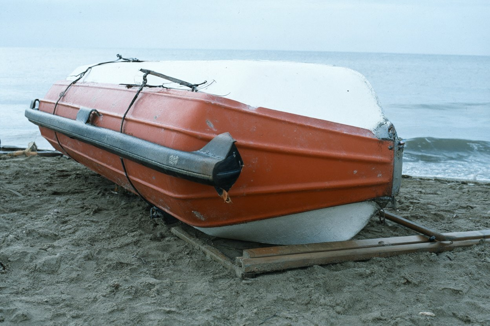

Бюро аварійних комісарів «Аварком-Південь»270011, м. Одеса, вул. Канатна, 22, оф. 5 · тел./факс (0482) 24-17-63
Акт огляду № 45/98
(рятувальна шлюпка лівого борту т/х «Ліман Стар»)
26 листопада 1998 р., 11:40–12:30Вовча коса, західний пляж, близько 400 м від стрілки
Справа № 98/117.Присутні: аварійний комісар бюро (А. к. гр. № 1); с-нт Коваль В. (ПТС «Вовча
коса»), який доставив комісара УАЗом і показав місце. Хмарно, вітер слабкий, сухо. Огляд проведено при денному
світлі, з рулеткою і штангенциркулем.
Оглянуто:
Розташування. Шлюпка лежить на піску вище урізу води приблизно на 12 м, догори дном, носом на
північний схід. Пісок навколо розрівняний вітром і дощем; слідів, що стосувалися б ночі 20.11, не виявлено
(Фото 1).
Шлюпка. Рятувальна, відкрита, моторна, корпус склопластиковий, помаранчевий зовні, білий усередині.
Довжина 6,9 м, ширина 2,3 м. На носі з обох бортів — трафарет «LIMAN STAR», на транці — «BELIZE». Корпус
цілий, тріщин і пробоїн не виявлено; на днищі подряпини від піску.
Планшир — плаский, склопластиковий, шириною близько 6 см, кромки закруглені. По всьому периметру
зовні під планширом — привальний брус гумовий, суцільний, профіль плаский, висота 9 см, кріплення —
врізні гвинти, головки втоплені. Брус на кормі з лівого борту на довжині близько 0,5 м відірваний від корпусу.
Кермо — перо склопластикове, плаский профіль, румпель дерев'яний. Банки (поперечні сидіння)
— склопластикові, плоскі, з закругленими кромками. Весла — 4 шт., дерев'яні, лопаті плоскі; 2 шт. —
закріплені під банками, 2 шт. — лежать поруч на піску.
Уключини — металеві, 4 шт., — у пеналі (ящику) під кормовою банкою; кришка пеналу закрита, гнізда
уключин на планширі порожні. Гнізда — врізні, врівень з планширом.
Зовнішні поверхні корпусу, планширу, бруса, керма оглянуто повністю. Металевих циліндричних деталей
діаметром близько 3 см на зовнішніх поверхнях немає. Металеві деталі зовні — лише рими для підйому (у
носовій і кормовій частині, утоплені в корпус) та гвинти кріплення бруса.
Мотор — стаціонарний дизель під кожухом у кормовій частині, кожух на місці; двигун залитий морською
водою і піском, не оглядався.
Спорядження. У носовому рундуку — бачок для води (порожній), відро, сокира на ремінці; ракет і
ліхтарів у шлюпці не виявлено.

Фото 1. Шлюпка лівого борту т/х «Ліман Стар» на західному пляжі Вовчої коси (26.11.1998).
Шлюпку з місця не переміщали. Висновків цей акт не містить.
Аварійний комісар бюро (гр. № 1)підпис
С-нт Коваль В. (ПТС «Вовча коса») — присутнійКоваль